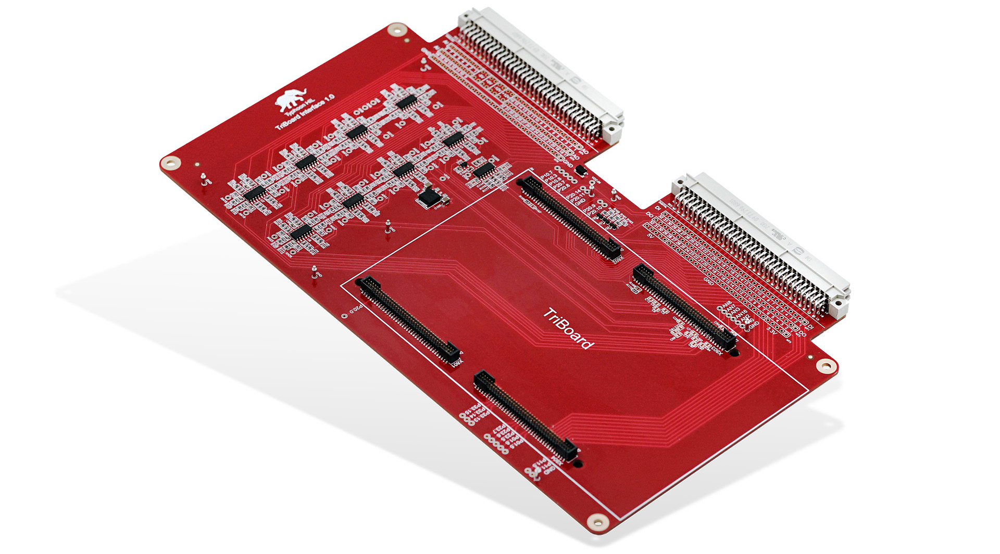

Overview
Overview of the purpose and connectivity of the HIL Infineon TriBoard Interface
The HIL TriBoard Interface is an interface board, designed to enable a seamless interface between AURIX™ TC3xx and TC4xx evaluation boards from Infineon and any HIL device.
Features:
- All HIL and many DSP unused signals are available through measurement terminals and test points
- TriBoard FTSH plug connectors
- 28 HIL Digital Inputs
- 16 HIL Digital Outputs
- 32 HIL Analog Outputs
- 2 HIL Analog Inputs

"Infineon" and "AURIXTM TriBoard" are registered trademarks of Infineon Technologies AG in Germany and/or other countries.